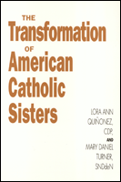

A report on the social, political, and spiritual changes for Catholic nuns in the U.S. since Vatican II
A report on the social, political, and spiritual changes for Catholic nuns in the U.S. since Vatican II


 A report on the social, political, and spiritual changes for Catholic nuns in the U.S. since Vatican II
A report on the social, political, and spiritual changes for Catholic nuns in the U.S. since Vatican II

|  |
The Transformation of American Catholic SistersLora Ann Qui�onez and Mary Daniel Turnerpaper EAN: 978-1-56639-074-3 (ISBN: 1-56639-074-5) |
"Lora Ann Qui�onez and Mary Daniel Turner once again serve American religious women well. Although their book focuses on the development of the Leadership Conference of Women Religious, it...is also an account of the thought development of American women religious.... Besides describing areas of change, Qui�onez and Turner analyze and interpret them thoroughly and objectively and also compassionately, courageously, and readably."
—Review for Religious
During the past four decades, radical changes have occurred in the personal and corporate lives of Roman Catholic nuns in the United States; in their institutions and ministries; in their relations with laity, clergy, and hierarchy; and in their presence in the public sphere. In this book, Lora Ann Qui�onez and Mary Daniel Turner explore this transformation: the experiences that marked these changes, their effects on the women, and the future suggested by the nature of the reforms.
The movement for change picked up speed in the decade after Vatican Council 11, which mandated the adaptation of religious communities to contemporary milieu. The impact of American culture on the sisters generated a struggle to reconcile American belonging and religious commitment into one identity. The Women's Movement caused a gradual awakening to the reality of gender as an element of personal and corporate identity. It made American nuns confront the structural questions that occur to awakened women and also confront the male Church hierarchy. This book is the first comprehensive analysis of the forces that directed the process by which American sisters have redefined themselves.
Excerpt available at www.temple.edu/tempress
"[Qui�onez and Turner ] offer a privileged perspective on the transitions that have taken place in the past 25 years.... [This] is an important work that will enlighten and challenge. It contains pieces of the ongoing transformation that are not found in the many other books on American women's religious life today. American sisters will appreciate this splendid effort to synthesize their experience. Others in the church will find that the experience of American sisters has much resonance with their own."
—National Catholic Reporter
"This well-written and well-documented book shows the energy, creativity, and highly organized response of these women to Vatican Council II and to the momentum which they themselves created. It is a testimony to the dynamism and creativity of the women in religious life in the past forty years. The book is a work of love and a tribute to all those women who have suffered and celebrated the transition thus far."
—Marie J. Giblin, Maryknoll School of Theology
Preface
1. Changing Times
2. On the Way to a Different Place
3. This Land Is Their Land
4. Their Name Is "Woman"
5. A Rightful Coming of Age
6. Not Without Struggle
Afterword
Notes
Church Documents Cited
Index
Lora Ann Qui�onez, CDP, an education program specialist for the U.S. Department of Education, is a member of the Sisters of Divine Providence community.
Mary Daniel Turner, SNDdeN, a member of the Sisters of Notre Dame de Namur community is co-director of Joseph House in Washington D.C.
Women in the Political Economy, edited by Ronnie J. Steinberg.
No longer active.
Women in the Political Economy, edited by Ronnie J. Steinberg, includes books on women and issues of work, family, social movements, politics, feminism, and empowerment. It emphasizes women's roles in society and the social construction of gender and also explores current policy issues like comparable worth, international development, job training, and parental leave.
© 2015 Temple University. All Rights Reserved. This page: http://www.temple.edu/tempress/titles/814_reg.html.